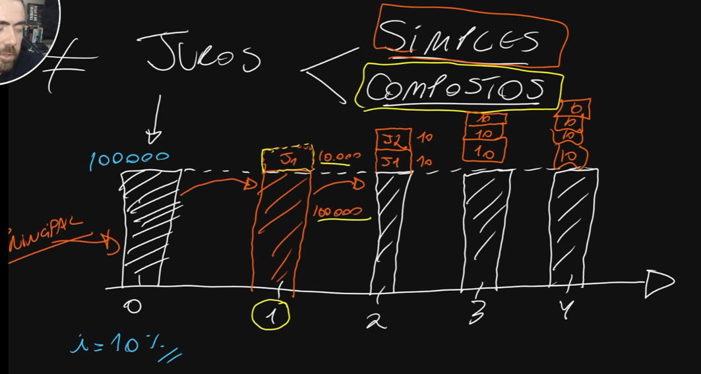
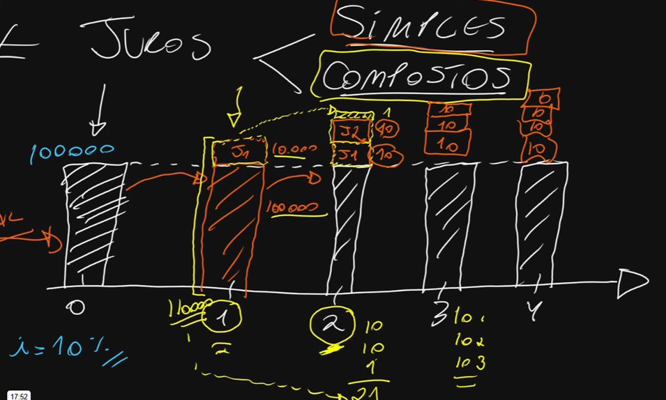
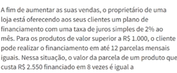

Link: Caderno de Questões - Tec Concursos
Os juros simples são sempre calculados com base no valor inicial do capital, diferentemente dos juros compostos, onde os juros rendem juros ao longo do tempo.
Ao isolar as variáveis, podemos encontrar qualquer elemento:
Aplicação de R$ 2.000,00 a 1,5% ao mês durante 8 meses:
Taxa: 1,5 / 100 = 0,015
Juros: 2000 × 0,015 × 8 = 240
Montante: 2000 + 240 = 2240
Os juros simples crescem de forma linear, enquanto os compostos crescem de forma exponencial.


